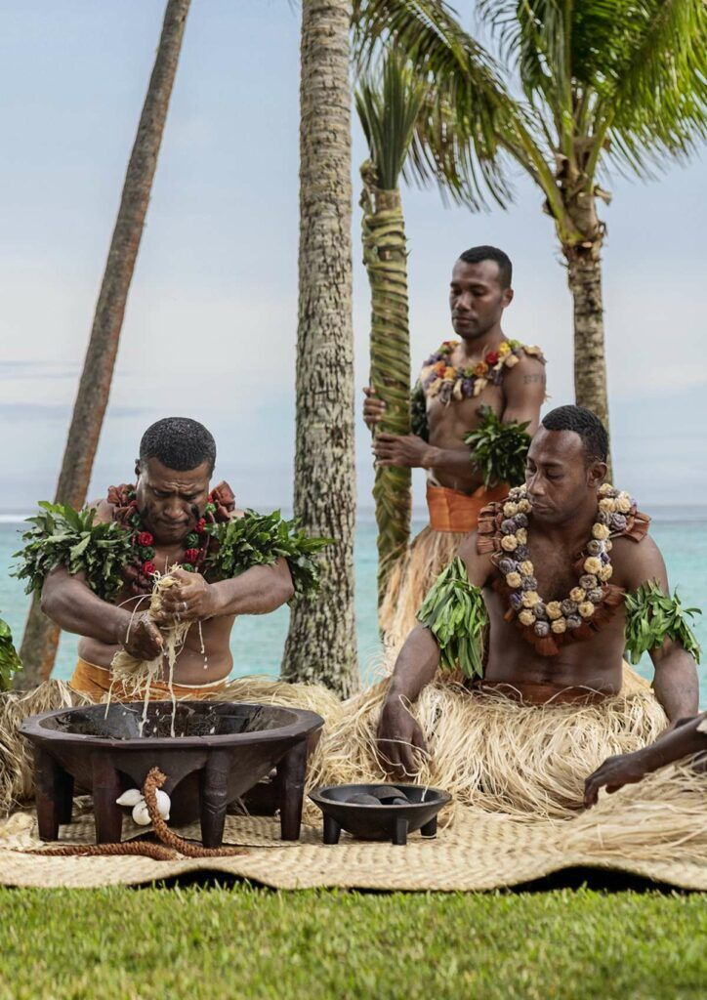
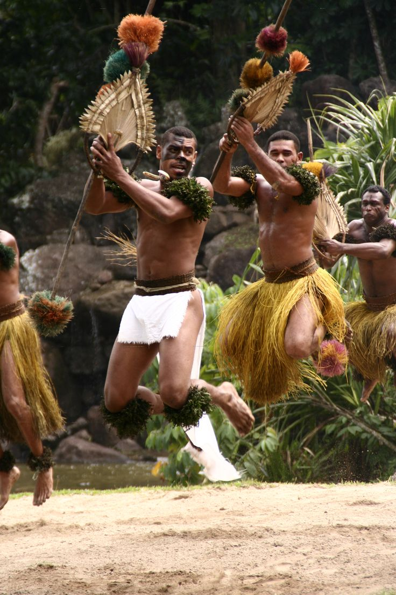
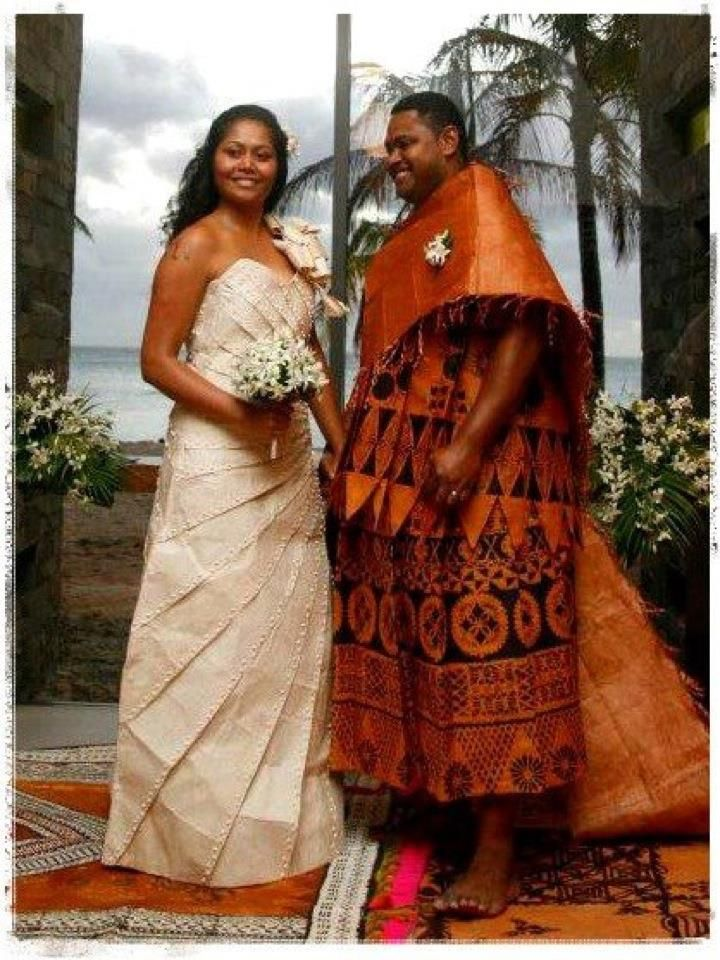

Fijian Culture

Fijian culture is full of respect, family, music, dance, and tradition. One important part of Fiji is the kava ceremony, where people gather together to drink yaqona and show respect.
Reference: Tourism Fiji Culture
Fijian Meke

Fijian Traditional Dance "Meke" is a dance based on sharing strories of our ancestors, travel, conflict or even love through the traditional dances .
Reference: Tourism Fiji Culture
Fijian Wedding

Traditional Wedding "Vakamau" is very unique to our culture, where the bride wear traditional clothing called Masi designs to the uniqueness of the tribes they both represent.
Reference: Tourism Fiji Culture